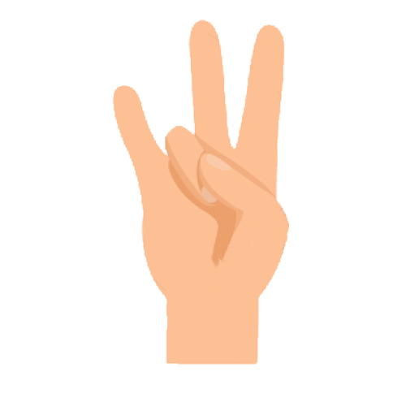
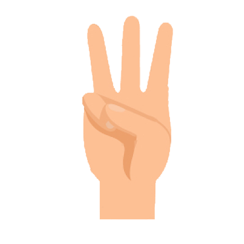
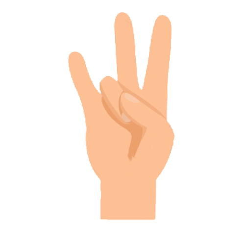
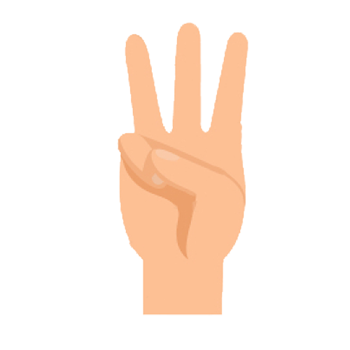

Magic Hands
A fun follow-along finger yoga game!
Why Play This Game?
- Relaxes finger and wrist muscles.
- Improves fine motor skills.
- A calming break from screen time.
 



Great Job!
Your hands are happy and relaxed!